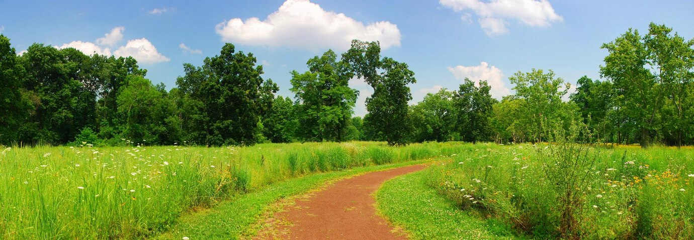

Waltz of the Flowers - Tchaikovsky
https://kr.freepik.com/free-photo/quiet-rural-trail-panorama_26743101.htm#fromView=search&page=1&position=45&uuid=d3dba8d4-475b-44a6-99c3-7d1c8c59f872&query=%ED%92%8D%EA%B2%BD
https://youtu.be/PamkR_ACPNw?si=dXWUCVCQGSjNNT03